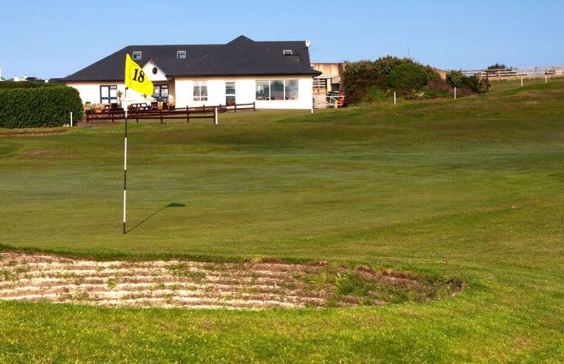
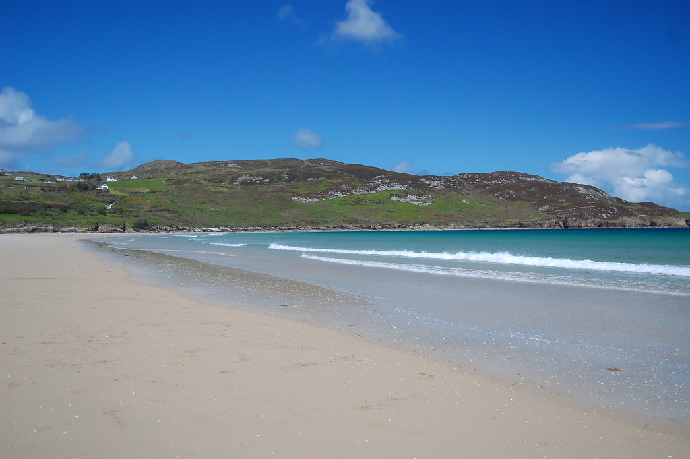

Dunfanaghy
The lively village of Dunfanaghy is about 5 miles away and has several restaurants, cafes, pubs and shops as well as two surfing/water sports outlets and there is horse riding available at Arnold’s Hotel and an 18-hole links golf course.

There is another Blue Flag beach, Killahoey, adjacent to the village.
Dunfanaghy is also home to festivals which run from June to September, most notably the Jazz and Blues Festival. See this link for details: Dunfanaghy
The Workhouse Exhibition is worth a visit.